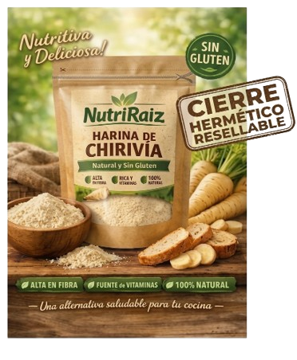

!Nutritiva y Deliciosa!
La chirivía es una hortaliza de raíz comestible, parecida a la zanahoria en vez de color naranja es blanca o color crema, su nombre científico es Pastinaca Sativa. se cultiva especialmente en climas fríos o templados y pertenece a la misma familia de la zanahoria y el apio. Es alargada, gruesa con un sabor ligeramente dulce, muy suave, su siembra es directamente por semilla en el suelo.
¿Sus beneficios? Tan variados como las deliciosas comidas que se pueden preparar con la chirivía:para empezar, es una raíz de fácil digestión, recomendada para estómagos delicados, además, ayuda a combatir la retención de líquidos y, finalmente, debido a su contenido de ácido fólico, es recomendada para mujeres que se encuentran en estado de embarazo y durante la lactancia.
En lo que respecta a la información nutricional, la raíz de chirivía presenta por cada 100g 75-90 kcal, ~4.9g entre fibra soluble e insoluble, 1.2g de proteína, 375mg de Potasio, 18g de hidratos de carbono, 17mg de vitamina C y 36 mg de Calcio, además de contener tambien en menores cantidades vitamina B9 y vitamina K.
